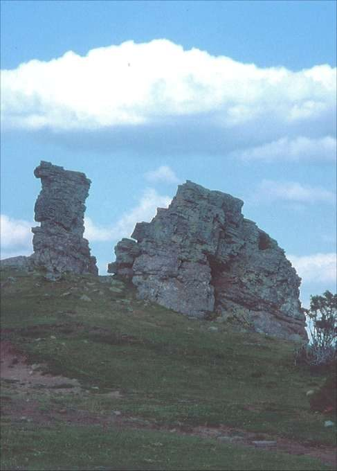
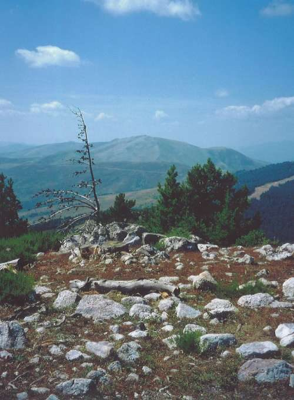

Dromedario del Cabezo
Brieva - Ortigosa · comarca del Najerilla
- Distancia11,2 kmida y vuelta
- Desnivel280 m
- Tiempo orientativo3 h 30 min
- Dificultadbaja
- Época recomendadaprimavera, verano, otoño
- Terrenopista
No, no se trata de una broma, pero es cierto que en las proximidades del Cabezo del Santo hay un dromedario. No suele viajar mucho, así que lo más probable es que lo sigáis encontrando dónde yo lo vi por última vez. Toda la línea de cumbre que hace de linde entre los municipios de Ortigosa, Brieva y Villoslada es hermosa como pocas.
Andar por ella y acercarse hasta las estribaciones del Cabezo del Santo es todo un placer. Como fondo de paisaje contaremos con las Sierras de Cebollera y Urbión; todo un entretenimiento para aquellos de vosotros a los que os guste identificar cumbres.


Recorrido
El Puerto de Piedra Hincada une los pueblos de Ortigosa y Brieva. Podemos acceder a él desde cualquiera de estas dos localidades. Desde la cima del puerto parte una ancha pista en dirección sureste por la que comenzamos a andar. La pista gana altura con rapidez, llegando más tarde hasta una bifurcación en la que debemos seguir por el ramal de la derecha.
A partir de aquí la pendiente se suaviza y comenzamos a tomar la dirección visual del Cabezo del Santo. Finalmente, muy cerca de las estribaciones de este monte, nos encontraremos al borde de la pista a nuestro amigo el dromedario. Tiene más de 3 metros de altura, así que os será fácil dar con él.


{kind=link}
{kind=link}